Infomercial: Why Do IT Students Care?
An activity connecting Calculus with Information Technology, limits, performance, and optimization.
2CALC-IT
2CALC-IT E-Portfolio
2CALC-IT E-PORTFOLIO
A digital portfolio documenting my learning, activities, mathematical solutions, reflections, and growth throughout 2CALC-IT.
Explore My JourneyGET TO KNOW ME
I am an Information Technology student specializing in Web Development. I am interested in creating websites and learning how technology can be used to solve different problems.
As an IT student, I have experience with HTML, CSS, JavaScript, responsive web design, and other web development concepts.
Before studying Calculus, I expected the subject to be challenging because it involves different mathematical concepts and problem solving. Throughout the course, I learned that Calculus can also be connected to technology, programming, data, and real-world situations.
Name: Joshua Jabez Sagad
Program: BS Information Technology
Section: WD-202
Course: 2CALC-IT
WHAT I STUDIED
Throughout 2CALC-IT, I studied different concepts that helped me understand functions, limits, derivatives, and their applications.
Understanding functions, their operations, and how they can be represented.
Learning how to evaluate limits using different methods.
Understanding when a function is continuous and identifying discontinuities.
Learning derivatives and how they describe the rate of change.
Applying the power, constant, sum, product, and chain rules.
Using derivatives to analyze functions and solve practical problems.
Using mathematical methods to find maximum and minimum values.
Understanding how changing quantities are related through derivatives.
Learning the reverse process of differentiation.
Understanding integration and its mathematical applications.
Understanding the relationship between differentiation and integration.
Applying integration to mathematical and real-world problems.
LEARNING ARTIFACTS
This section contains selected activities, worksheets, projects, examinations, and other evidence of my learning throughout the course.
An activity connecting Calculus with Information Technology, limits, performance, and optimization.
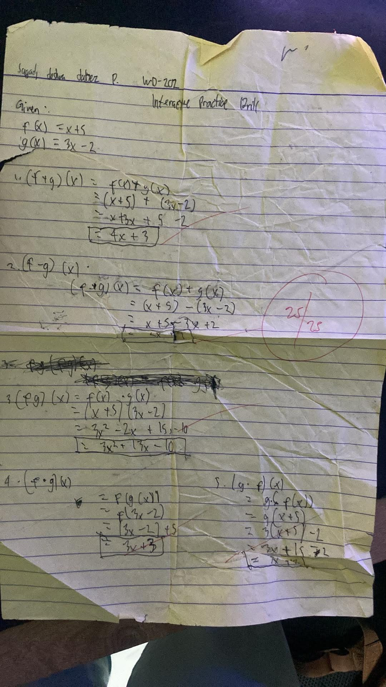
Function operations including addition, subtraction, multiplication, and composition.

A visual presentation of Function Operations.
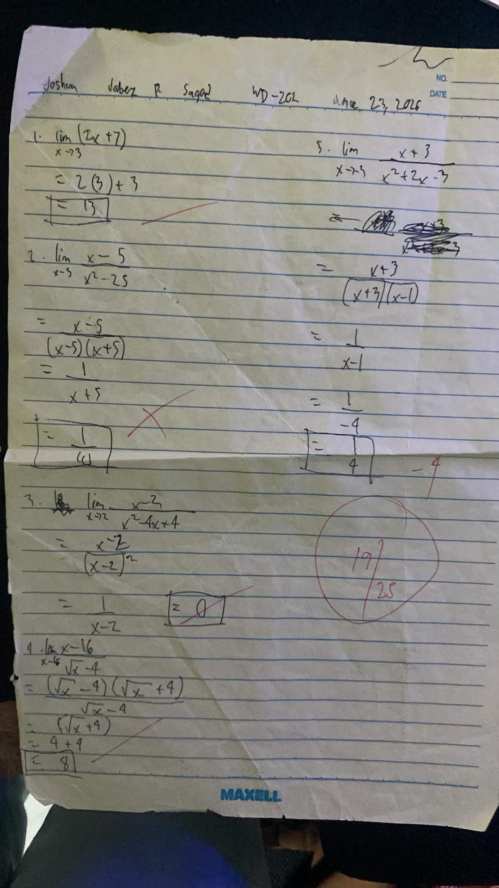
Practice exercises involving rational limits.
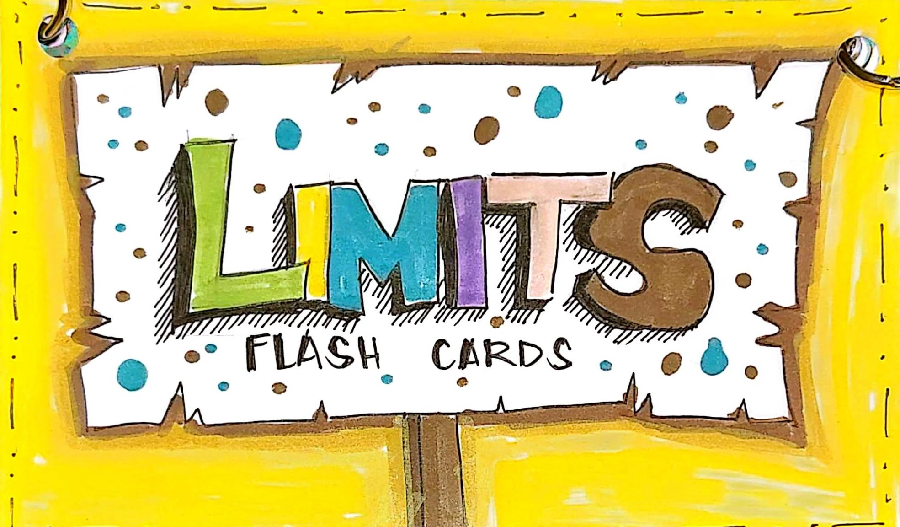
Group cover and roster sheet for the limits activity.
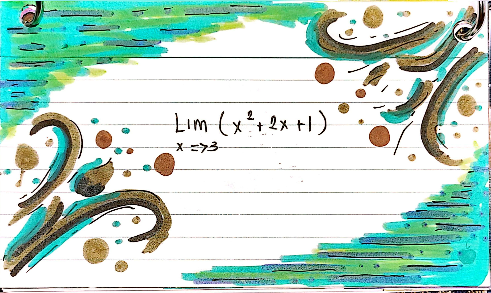
Direct substitution limit.
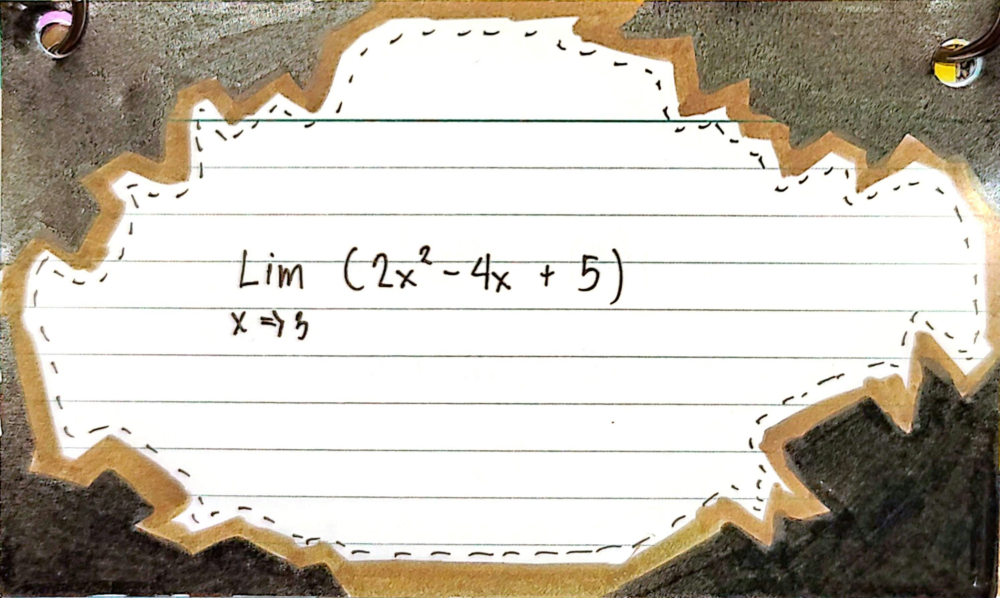
Polynomial substitution.

Limit evaluation through factoring.
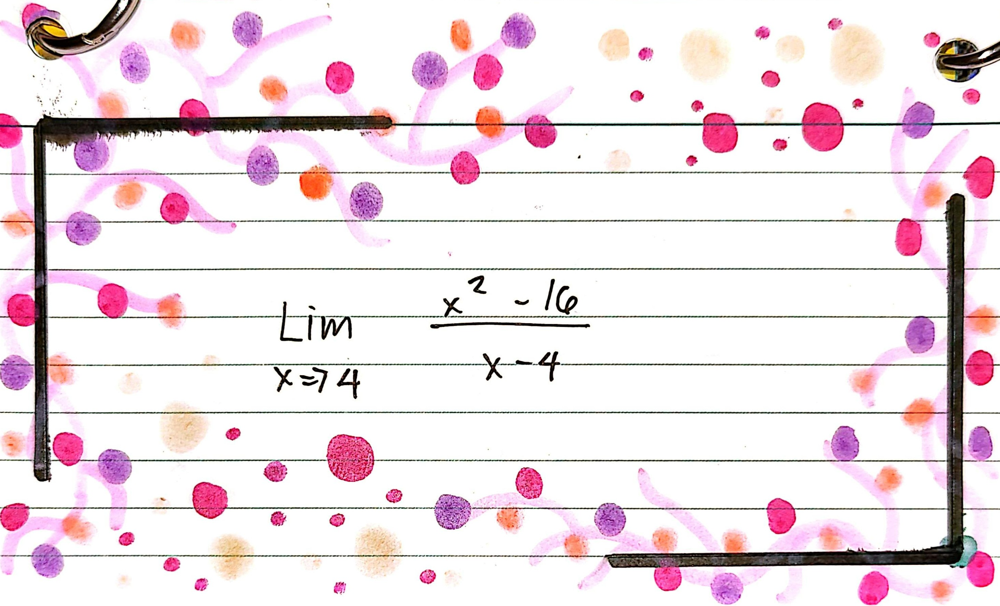
Indeterminate limits.

Perfect square limits.
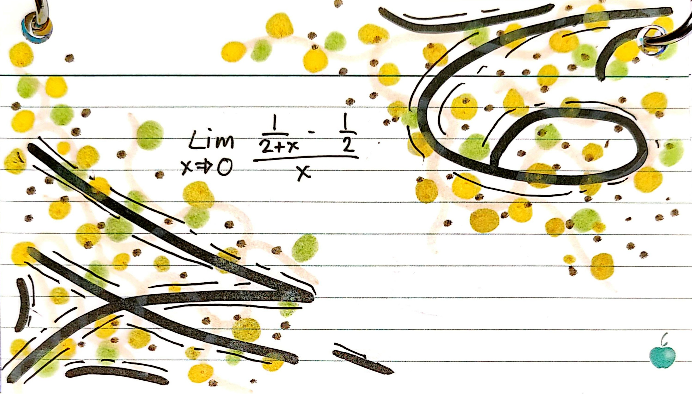
Complex fraction limits.
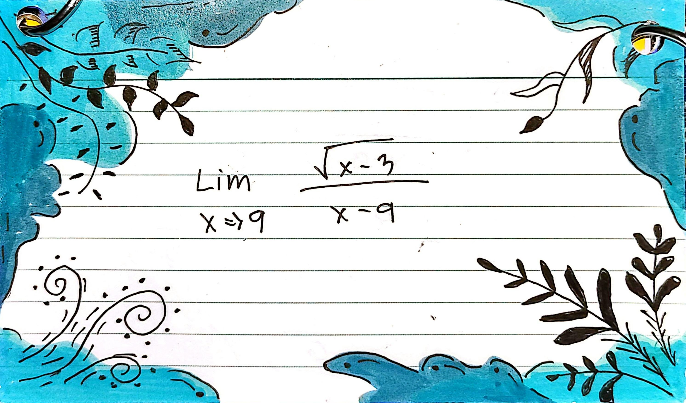
Radical conjugate limits.
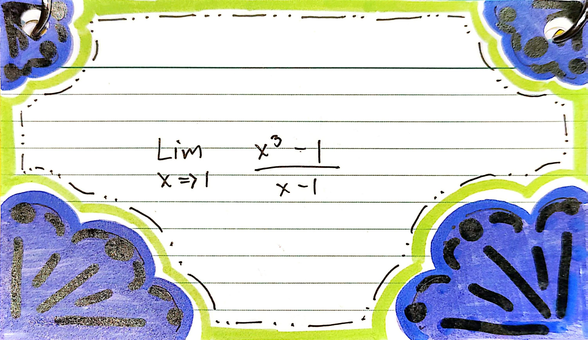
Difference of cubes.
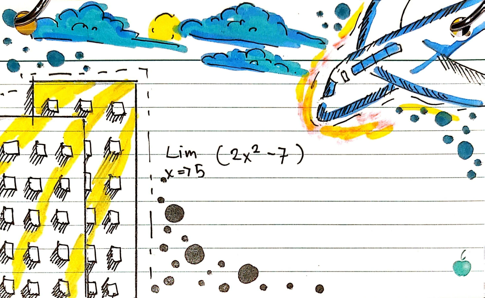
Quadratic substitution.

Radical conjugate practice.
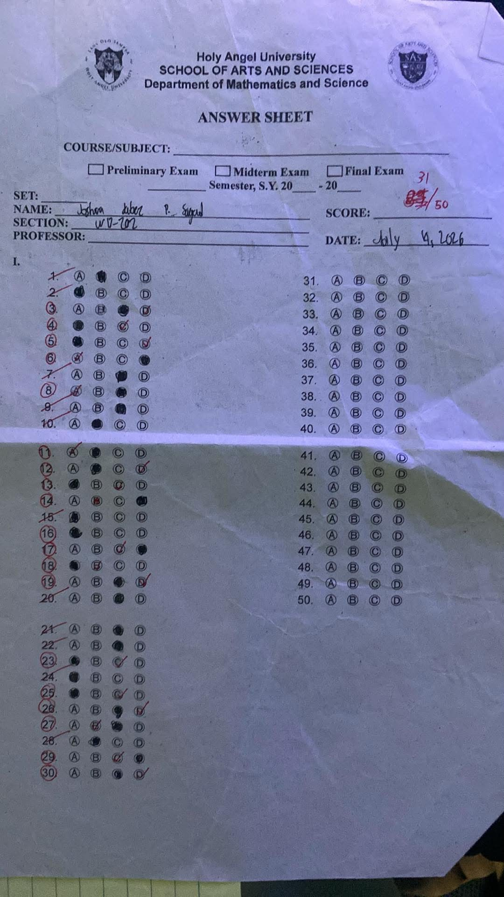
Prelim examination answer sheet.
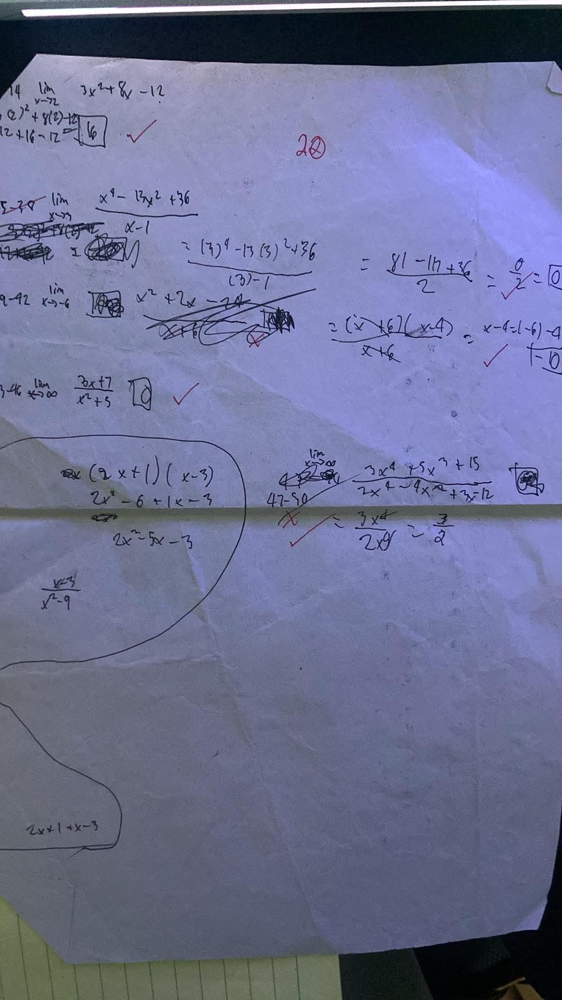
Selected solutions from the prelim examination.
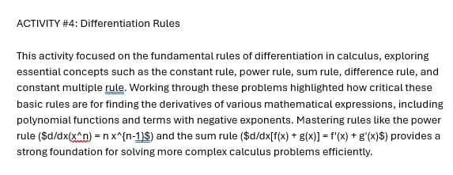
Power, constant, and sum rules of differentiation.
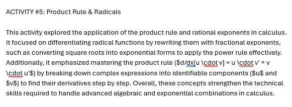
Fractional powers and product rule exercises.
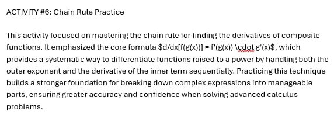
Composite function derivatives using the chain rule.
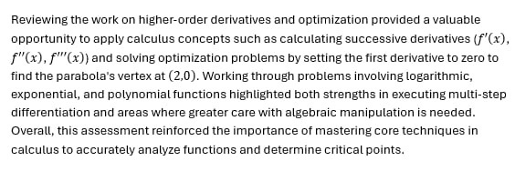
Midterm examination evidence and mathematical work.
CALCULUS + TECHNOLOGY
Calculus can be connected to Information Technology, programming, computing, and Web Development. The concepts I studied can help explain how technology works and how problems can be analyzed.
Derivatives can describe how quickly something changes. In technology, this can be useful when analyzing performance, speed, and changing data.
Optimization can help find better or more efficient solutions. It can be connected to computer performance, algorithms, and resource usage.
Mathematical functions and derivatives can be used in computer graphics, animation, modeling, and simulations.
Calculus can help describe trends, changes, and relationships in data. This connects mathematical analysis with computing and technology.
Calculus concepts can be applied to movement, physics, animation, and simulations in games.
Mathematical functions can help control movement and transitions in digital interfaces and interactive applications.
MY PROGRESS
My understanding of Calculus developed as I practiced more problems and reviewed my mistakes. At the beginning, some concepts were difficult because I needed to understand several steps before reaching the final answer.
I initially found Calculus challenging, especially when solving problems that required several mathematical steps.
Completing activities helped me practice different formulas and problem-solving strategies.
Through repeated practice and checking my mistakes, I became more comfortable explaining and solving Calculus problems.
FINAL REFLECTION
My experience in 2CALC-IT helped me understand that Calculus is more than simply solving mathematical equations. Throughout the course, I learned different concepts such as functions, limits, derivatives, and their applications. Each activity gave me an opportunity to practice these concepts and understand how they work.
One of the areas that challenged me was solving problems that required multiple steps. Sometimes a small mistake in one step could affect the final answer. Because of this, I learned the importance of checking my work and understanding the process instead of focusing only on the final answer.
The activities and examinations included in this portfolio show how my understanding developed throughout the course. By reviewing my earlier work and comparing it with later activities, I can see that I became more familiar with mathematical procedures and problem-solving.
As an Information Technology student, I also learned that Calculus can be related to my field. Concepts such as rate of change and optimization can be connected to programming, computer graphics, data analysis, game development, and other technologies.
Overall, 2CALC-IT helped me develop patience, problem-solving skills, and a better understanding of mathematical concepts. I still have areas that I need to improve, but the activities in this portfolio represent my progress and learning throughout the course.
SOURCES
The activities, worksheets, examination materials, photographs, and other learning artifacts presented in this portfolio are my academic outputs from 2CALC-IT.
External mathematical references and digital resources used for learning or clarification should be properly acknowledged here.
Course: 2CALC-IT
Program: BS Information Technology
Section: WD-202
Student: Joshua Jabez Sagad